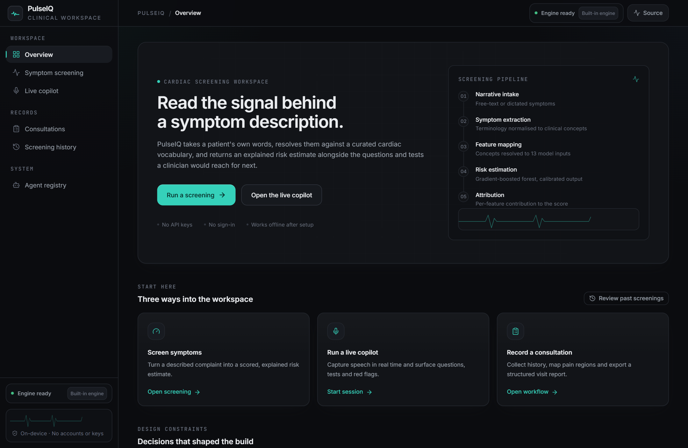
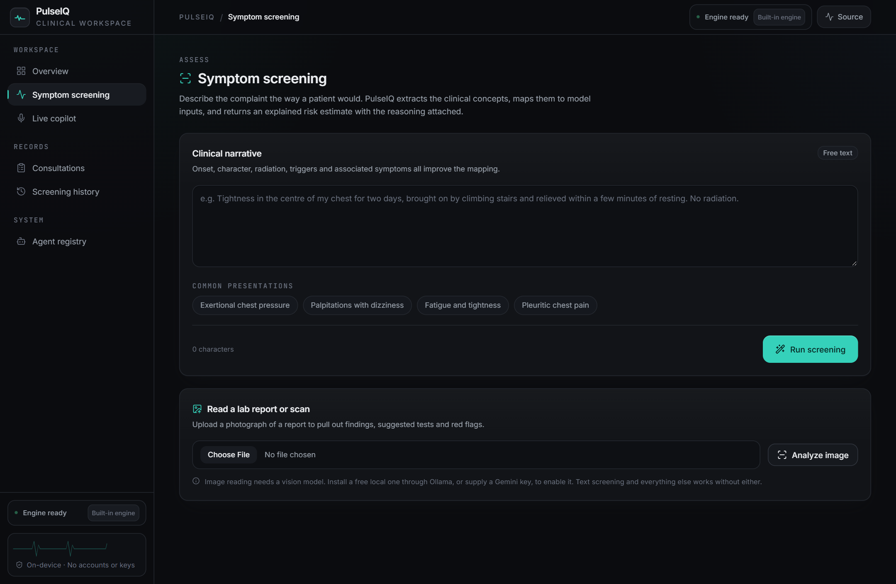
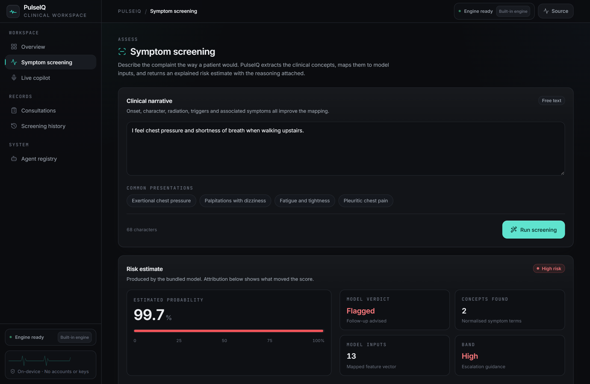
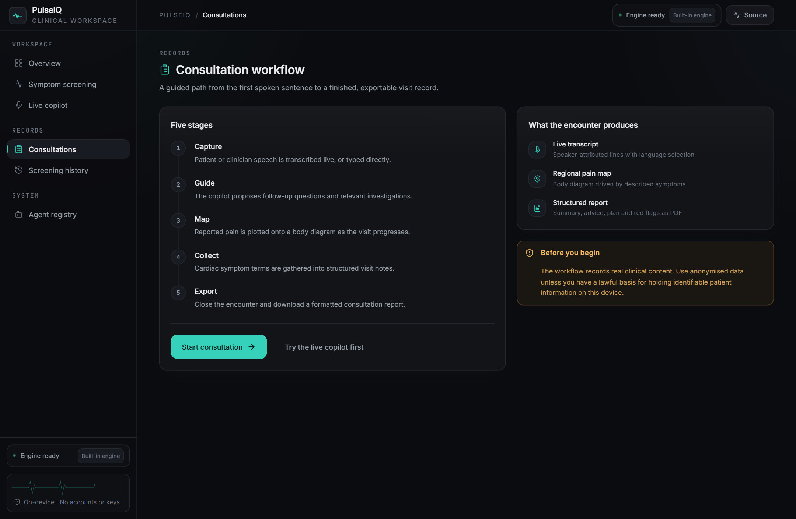
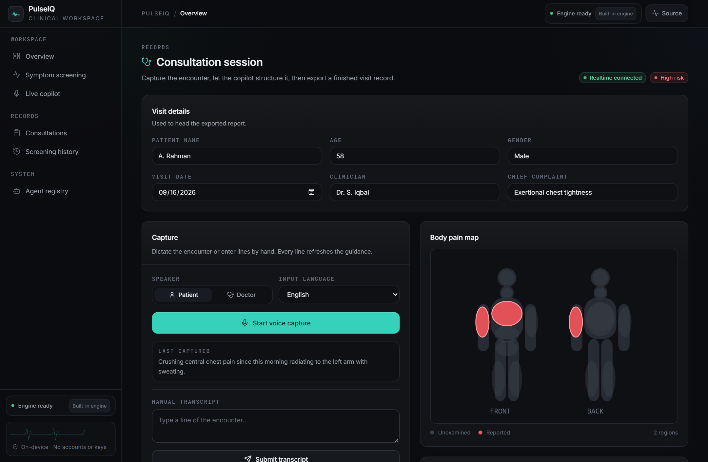
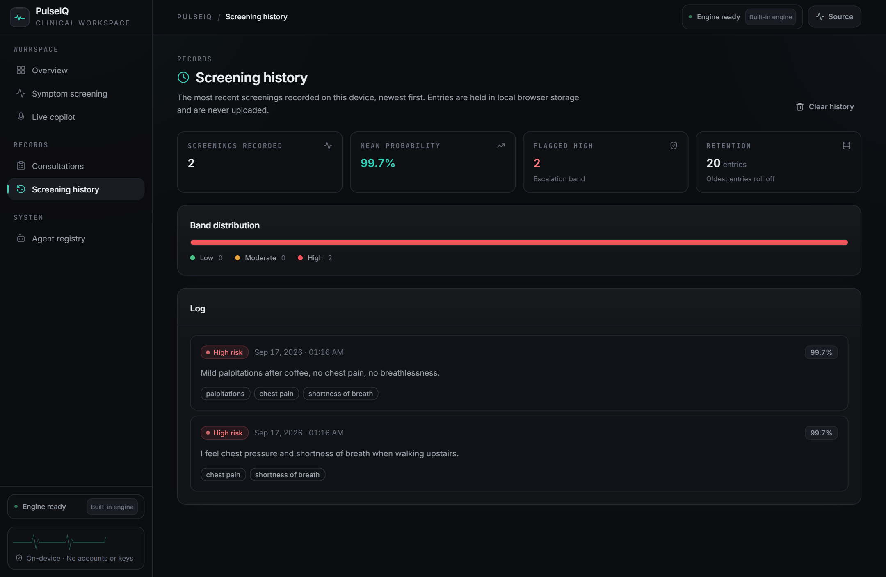
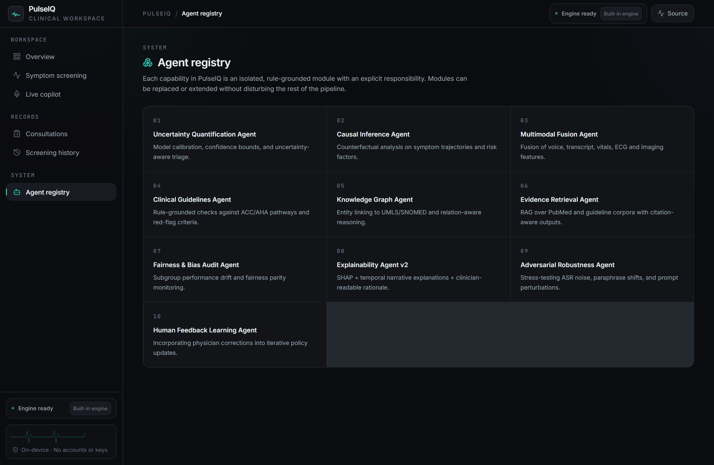
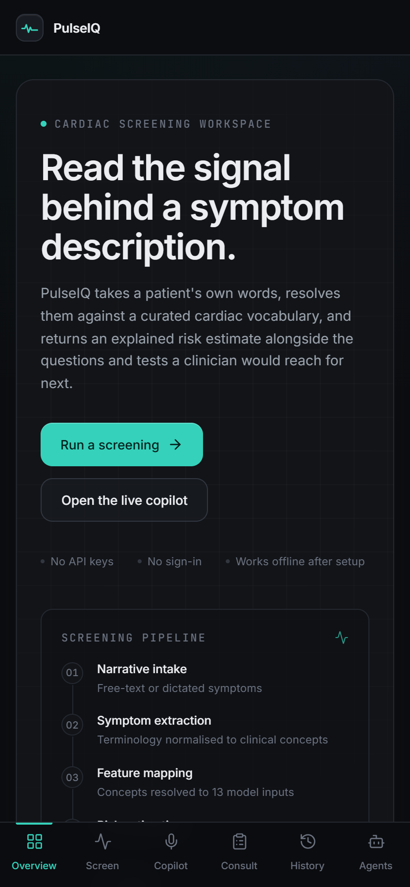

Symptom screening
Free-text narrative in, explained probability out, with every detected concept and mapped model input shown alongside the score.
PulseIQ takes a patient's own words, resolves them against a curated cardiac vocabulary, and returns an explained risk estimate with the follow-up questions and investigations a clinician would reach for next — then carries the encounter through to a structured report.
Screening, live capture, mapping and reporting share a single local reasoning engine.
Free-text narrative in, explained probability out, with every detected concept and mapped model input shown alongside the score.
Speech is transcribed as the encounter runs. Guidance panels refresh on every pass, including suggested questions and red flags.
Described pain locations are plotted onto a front and back diagram, so regional patterns are visible at a glance.
Close an encounter and export a formatted PDF carrying the summary, advice, plan and escalation notes.
The last twenty screenings are kept on the device with band distribution and mean probability, so drift is easy to spot.
Each capability is an isolated, rule-grounded module with an explicit responsibility, replaceable without disturbing the pipeline.
Five deterministic stages. Nothing is hidden behind a single opaque model call.
The widely circulated heart.csv ships with target=1 meaning healthy. Screening labels are flipped at training time, and the script now asserts on textbook disease and healthy profiles so the inversion cannot return silently.
Feature tiers were measured empirically rather than guessed, so a clear exertional presentation scores high and an unrelated complaint stays low, instead of both drifting to the same band.
A built-in rule engine answers immediately. If a local model is present it is used instead. A hosted model is optional, never a prerequisite — there is no key to configure.
Screening, live capture, mapping, history and the agent registry, recorded against the running app.
Captured from the live application, not a design file.









Python 3.10+ and Node 18+. Nothing is sent anywhere.
# backend cd cardio-ai-system python -m venv .venv .venv/Scripts/python -m pip install -r requirements.txt # Windows .venv/Scripts/python -m uvicorn backend.api_server:app --port 8000 # frontend, in a second terminal cd cardio-ai-system/frontend npm install npm run dev # http://localhost:5173
On Windows the bundled Start-PulseIQ.cmd performs both steps.
PulseIQ is a screening and documentation aid. It does not diagnose, and its output must be reviewed by a qualified clinician before informing care.
Any presentation suggesting acute coronary syndrome — ongoing chest pain, syncope or respiratory distress — must be escalated on clinical grounds alone, irrespective of what this software reports.
Records are held in local browser storage. Use anonymised data unless you have a lawful basis for holding identifiable patient information on the device.